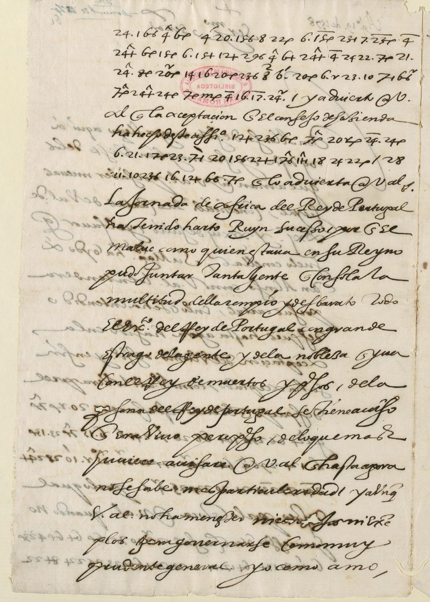

特集 · フェリペ2世の王政、16世紀
マドリード 1578年：「1レアルもない」――アントニオ・ペレスがドン・フアン・デ・アウストリアに送った暗号
1578年夏。フェリペ2世の異母弟でレパントの勝者ドン・フアン・デ・アウストリアは、反乱中のネーデルラントを治め、軍のための資金を求めていました。マドリードの国務秘書アントニオ・ペレスは8月19日、自筆で返書を送ります。その4か月前、ペレスはドン・フアンの秘書フアン・デ・エスコベードをマドリードの路上で暗殺させていました。平文では友好的なこの手紙で、肝心な言葉は暗号になっています。
« … con grandissima dificultad del consejo de hazienda, por no aver un real y tantas cosas que proveer. »
「……財務会議のたいへんな難儀のもとに。1レアルもなく、手当てすべきことがあまりに多いのです」：アントニオ・ペレスからドン・フアン・デ・アウストリアへ、マドリード、1578年8月19日（暗号部分）。
新しいこと、既に知られていたこと
既知のこと。ペレスとエスコベードの事件は、ミニェ（1845年）やガスパール・ムーロが刊行した史料（1877年）以来、フェリペ2世治世でもっともよく研究された事件の一つです。[3][4]ドン・フアンが資金に窮していたこと、1575年の支払停止のあと王室がフランドル戦争の費用に苦しんでいたことも知られています。この書簡は王立歴史アカデミーのフェルナンデス・サン・ロマン・コレクションにあり、Public Domain Markでオンライン公開されています。[1]
私たちが加えること（私たちの知る限り）。(1) 4つの暗号部分の初めて公表される解読：70語のうち69語が確実または有力（98.6％）で、ダニエル・ブルドーの基準で「解読済み」。(2) 暗号の同定：1577年のスペイン官房の数字式音節表で、ジェノヴァ発の公信と同じもの、ペレス独自の変種つき。(3) ペレスが平文で隠したこと：金はない、ということ。
ドン・フアン、エスコベード、ペレス
ドン・フアンは1576年にネーデルラント総督に任じられます。1577年の永久勅令のあと戦争が再開し、1578年1月、彼はジャンブルーで全国議会軍を破りますが、給料の払われない軍は消耗していきます。[5]秘書エスコベードは主人の計画を弁護するためマドリードに来ていましたが、ペレスは彼を危険な人物として王に示しました。1578年3月31日、エスコベードは路地で剣で殺され、疑いはまだ王の信頼を得ていたペレスに向かいます。[4]
8月、ドン・フアンは資金を求めてドン・アロンソ・デ・ソトマヨールをマドリードに送ります。ペレスの返事は、銀行家との融資契約（アシエント）を知らせつつ、肝心なことをほとんど隠せていません。

暗号が語ること
第1の部分は、この急便の発送が財務会議の「たいへんな難儀のもとに」なされたと述べます。「1レアルもなく、手当てすべきことがあまりに多い」からです。第2の部分はこう付け加えます。
「……財政はかくも逼迫しており、必要なだけ用立てることは不可能と存じます。」
第3の部分は、財務会議が今回のアシエントを受け入れたのは「ほかのものは一切履行しないとの留保つきで」だったと明かします。つまり、この金が最後だということです。同じページの平文は、8月4日のアルカセル・キビールでのポルトガル王セバスティアンの敗北と死を伝えています。リスボンでは継承危機が始まり、フェリペ2世の関心と資金を吸い取っていくことになります。
ドン・フアンは6週間後の1578年10月1日、ナミュール近郊で、病のうちに援軍もなく死にます。ペレスは1579年7月に逮捕されます。8月19日の書簡は、国務秘書のある瞬間を示しています。ドン・フアンと平文で友好的な文通を続けながら、暗号では、マドリードからはもう何も期待できないと告げているのです。
暗号
- 数字式の音節表：子音を数字で（6 d、7 c、15 l、16 m、17 n、20 p、22 r、23 s、24 t…）、母音を数字のあとの印で（+ a、. e、6 i、鉤 o、ı u）。
- 上付きの記号で n、s、r、l。単独の母音は数字だけで。
- 1577年のジェノヴァ大使館の表の変種：ペレスでは8が g（ジェノヴァでは b）、「小さな2のついた8」が ble。
読み方
- 表の再構成：シマンカスに残るジェノヴァ発公信の暗号文と「descifrada（解読文）」の対から表を再構成し、ペレスに合わせて調整（鍵 K_P）。
- 失敗の公表：最初の対による検証（Estado 1410,69–70）は語の72.4％で、事前に定めた75％に届かず、鍵は検証されませんでした。
- 新しい対での検証：事前に書いてハッシュ化した手順の追補に従い、修正した鍵 K_P2 を固定して、1577年7月19日のジェノヴァ公信（Estado 1410,65、387文字）の12行に適用。12行は二度転写して固定し、そのあとで当時の解読文（1410,66）を開きました。語の81.3％、文字の87.9％を回復、200個の対照鍵は最良でも16.5％と47.8％。
- ペレス書簡の解読：疑わしい記号は最大解像度の画像で再確認。確実60語、有力9、未解決1。
なお不確かなこと
- 短い本文：暗号語70のうち9が有力。1語（‹ningun›「いかなる…も」）は未解決で、「estragar」の正確な意味は不確かです。
- 先行研究。2026年10月29日と11月14日に確認：ミニェ（1845年）、CODOIN、G. ムーロ（1877年、全文検索）、C. フェルナンデス・ドゥーロ、P. アビラ・セオアネ（2024年）、ダニエル・ブルドーのリポジトリ（対象 perez1578、私たちの解読）、Cryptiana、オンライン検索。一部は刊行済み：セバスティアン王の死に触れた平文の段落（「Y aunque V. A. no ha menester ni consejos ni ejemplos…」）は、A. ロドリゲス・ビリャが B. ポレーニョ Historia del sereníssimo señor D. Juan de Austria（マドリード、1899年）の付録 第LXXX号、516頁に刊行し、G. マラニョン『アントニオ・ペレス』第2巻 付録XXXIXが再録しています。どちらにも4つの暗号部分はなく、私たちの解読は、私たちの知る限り、初めて公表される解読のままです。
参考文献
マドリード、王立歴史アカデミー図書館、2/Ms Caja 8 nº 4（フェルナンデス・サン・ロマン・コレクション）：アントニオ・ペレスからドン・フアン・デ・アウストリアへ、1578年8月19日、自筆。画像は Public Domain Mark 1.0。RAHデジタル図書館 ↗
シマンカス総文書館、Estado 1410,65–66（ジェノヴァ、1577年7月19日、暗号文と「descifrada」。画像は転載しません）。PARES ↗
F. Mignet, Antonio Perez et Philippe II, Paris, 1845; G. Muro, Vida de la princesa de Éboli, Madrid, 1877; B. Porreño, Historia del sereníssimo señor D. Juan de Austria, ed. A. Rodríguez Villa, Madrid, 1899, 付録 第LXXX号、516頁（平文の段落のみ）。ムーロ、Internet Archive ↗ ポレーニョ、Internet Archive ↗
“Antonio Pérez (statesman)”, Wikipedia (en)、2026年11月14日閲覧。Wikipedia ↗
“John of Austria”, Wikipedia (en)、2026年11月14日閲覧。Wikipedia ↗
ダニエル・ブルドー、cyphersolver リポジトリ：95％基準と対象 perez1578 ↗（この史料は目録にありません）。転写、鍵、解読：Brice Dudout、Claudeとともに、2026年10月。史料ページの「Pérez 1578」の項。